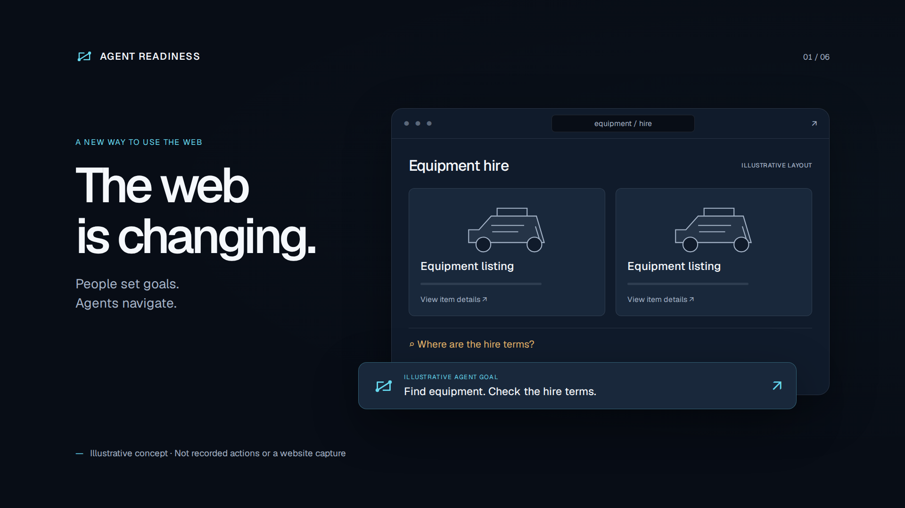
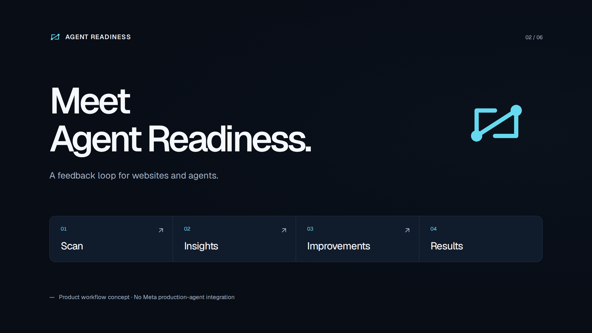
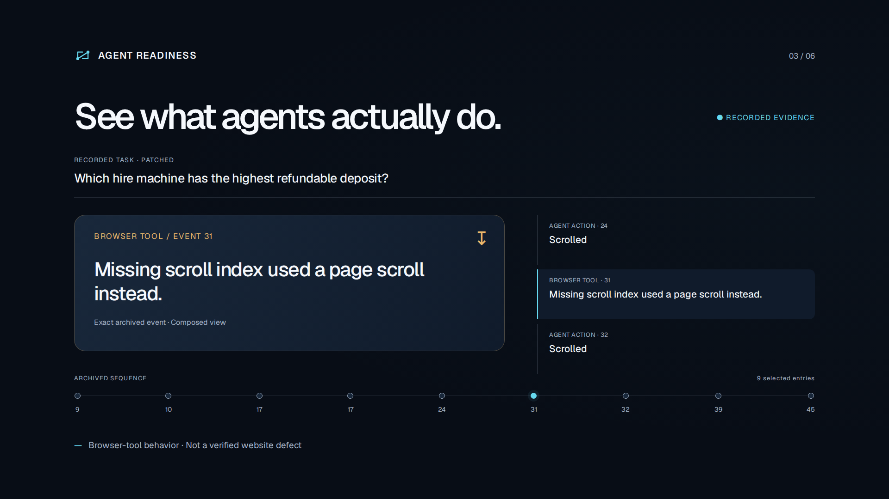
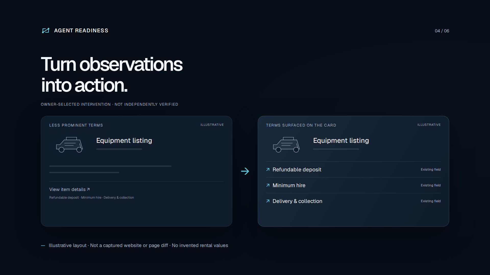
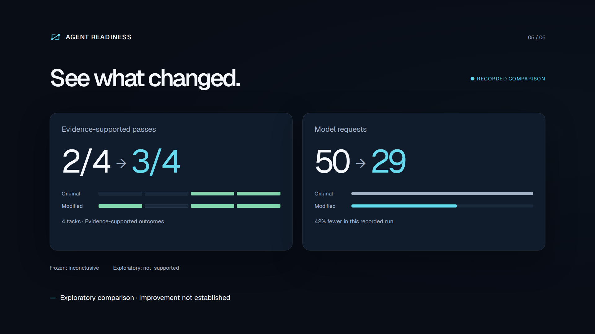
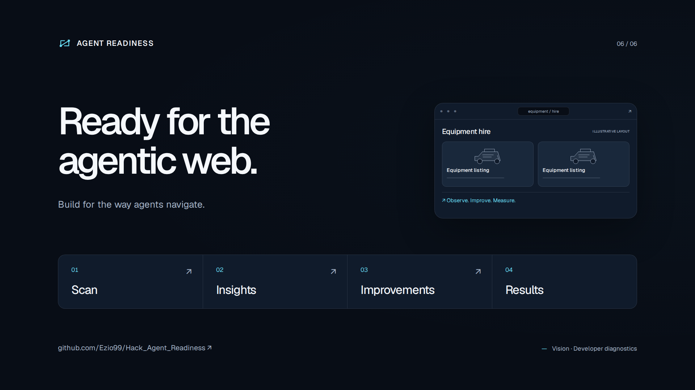

One developer story. Evidence and illustration clearly labelled.
1920 × 1080 each · No animation

Illustrative concept · Not recorded actions or a website capture

Product workflow concept · No Meta production-agent integration

Recorded evidence · Observations are not causal diagnoses

Illustrative layout · Not a captured website or page diff

Recorded contemporary arms only

Vision · Developer diagnostics